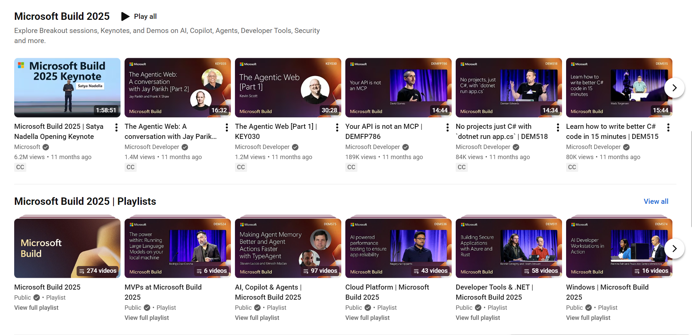

If You Didn't Capture It, Did It Really Happen?

If your conference happened and you didn't capture the sessions, did it really happen?
I've been in this industry long enough to watch the same debate play out over and over. Event organizers worry that if they make content available on-demand, people won't show up in person. It sounds logical. Why fly across the country when you can watch from your couch?
But that logic is fundamentally wrong. And if you're leaving session capture on the table because of this fear, you're making a costly mistake.
Why People Actually Show Up
Here's the thing: people don't go to events just to watch sessions. If that were true, conferences would have died the moment YouTube launched.
People attend events for three things that can't be replicated digitally:
- Networking: The hallway conversations. The dinners. The chance encounters at the coffee bar that turn into partnerships or job offers. This is the real value of in-person events.
- Hands-on labs: Getting guided help from experts. Trying new tools with someone right there to troubleshoot when things go wrong.
- Dedicated time: Carving out three days where your only job is to learn. No Slack notifications pulling you away. No meetings interrupting. Just focused immersion.
Sessions are part of the experience, sure. But they're not why people book flights and hotels. The fear that on-demand content cannibalizes in-person attendance misunderstands what makes events valuable in the first place.
The Numbers Don't Lie
Let's talk reach.
A successful in-person event might draw a few thousand attendees. Maybe ten thousand if you're running something massive. That's impressive! That's a lot of people in one place, excited about your content.
Now compare that to on-demand. A well-produced session recording can reach hundreds of thousands of viewers. Over time, millions. It lives on your channel forever, getting discovered by new audiences through search, recommendations, and social sharing.
Your keynote speaker gave an incredible 45-minute talk to 3,000 people in a room. But with capture and distribution, that same talk reaches 300,000 over the next year. Ten times your in-person attendance, watching the content you already created, building affinity for your brand.
Why would you leave that on the table?
Beyond the First Watch
On-demand content isn't just about expanding reach. It's about depth.
When someone watches a session live, in person, they're processing in real-time. They miss things. They get distracted by the person next to them checking email. They're tired from the previous session. They can't pause to look something up.
Recordings change everything. Viewers can rewatch complex sections. They can pause and dig into a demo. They can share specific timestamps with colleagues who need to see that exact point.
And here's the real unlock: transcripts.
Every recorded session generates a transcript. That transcript is searchable, quotable, and now with LLMs, analyzable. Your attendees can run session content through AI to extract insights they would have missed in real-time. They can ask questions about the material, generate summaries, connect ideas across multiple sessions.
You're not just giving people a recording. You're giving them raw material for deeper understanding than they'd ever get sitting in a room.
Brand, Trust, and Reach
Every captured session is a brand asset. It demonstrates expertise. It shows the caliber of speakers you attract. It proves the value of your event to people who couldn't attend this year but might next year.
On-demand content builds trust. When someone discovers your event through a session recording and thinks "that was genuinely useful," you've created a relationship. They'll remember you. They'll follow your channel. And eventually, they might just book that flight.
The best marketing for your next event is the captured content from this one.
If You Have the Budget, Capture It
This is my simple advice: if you have the budget to capture your keynotes and sessions, do it. Every time. Without exception.
The downside risk is minimal. The upside is enormous. You're turning a three-day event into a year-round content engine. You're extending your reach by orders of magnitude. You're giving your attendees lasting resources they can return to.
Don't let the fear of cannibalization stop you. The people who were going to attend in person will still attend in person. And now you've also reached everyone who couldn't make it, who discovered you after the fact, who wants to experience your event before committing to next year's registration.
If your event happened and you didn't capture it, you didn't just miss a content opportunity. You left your message locked in a room that emptied when the sessions ended.
.png)
Microsoft Build is two weeks away and it's one of the best examples of this philosophy in action: a massive in-person event that's fully captured and streamed for on-demand viewing. If you can't make it to San Francisco, you can still watch the keynote and breakouts live. If you're busy during a specific talk, catch it on-demand. Register now to watch live sessions and download resources: build.microsoft.com
See you there, whether in person or on-demand.
Comments